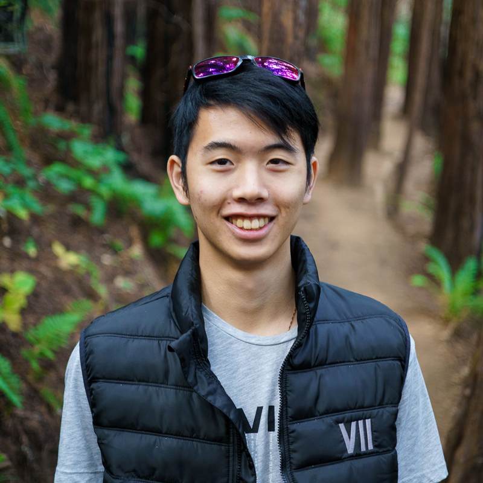
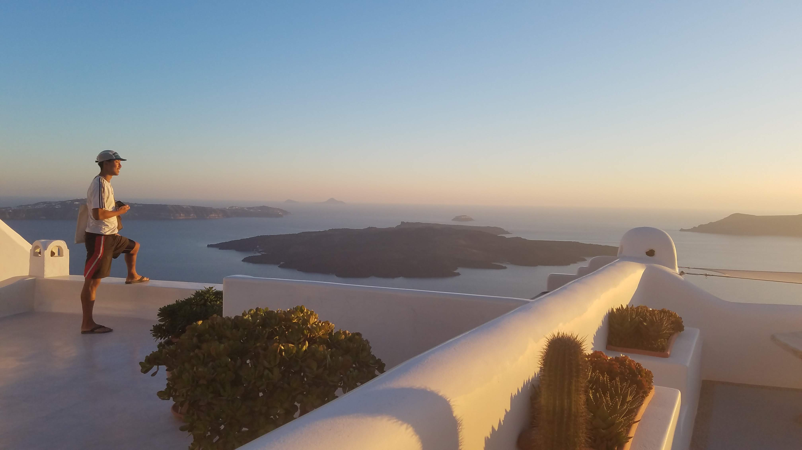
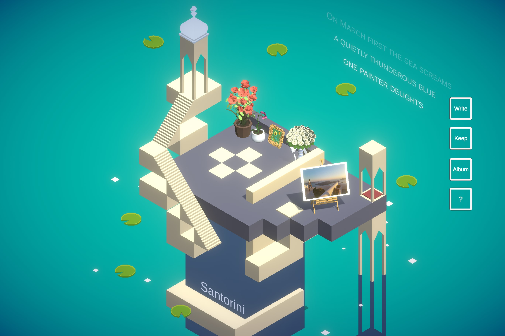

Thank you for taking the time to learn about our story. I'm Awu, the founder of MoSpace. This virtual memorial was conceptualized during the pandemic as I encountered the death of my close friend, Ralston.

MoSpace began as a collection of photographs and videos I have of my friend. These are memories from our trips around Greece: climbing mountains, running across islands, biking, and swimming in the ocean.
I have of my friend. These are memories from our trips around Greece: climbing mountains, running across islands, biking, and swimming in the ocean.

I knew I didn't want these memories to fade away. I knew I needed a place to preserve these memories, a place where I can honor my friend. So I created MoSpace.

In case you're wondering, MoSpace isn't my first project. I am the founder and director of a BAFTA award-winning team. Ama's Momento is a multimedia experience that encapsulated the dreams of my grandmother (IndieCade/LA Times). Dear Mom is a VR film for Mothers' Day depicting the cultural and generational conflicts between a Chinese-American artist and her traditional Chinese mother(Oculus).